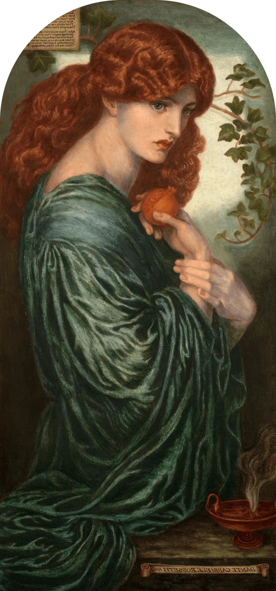
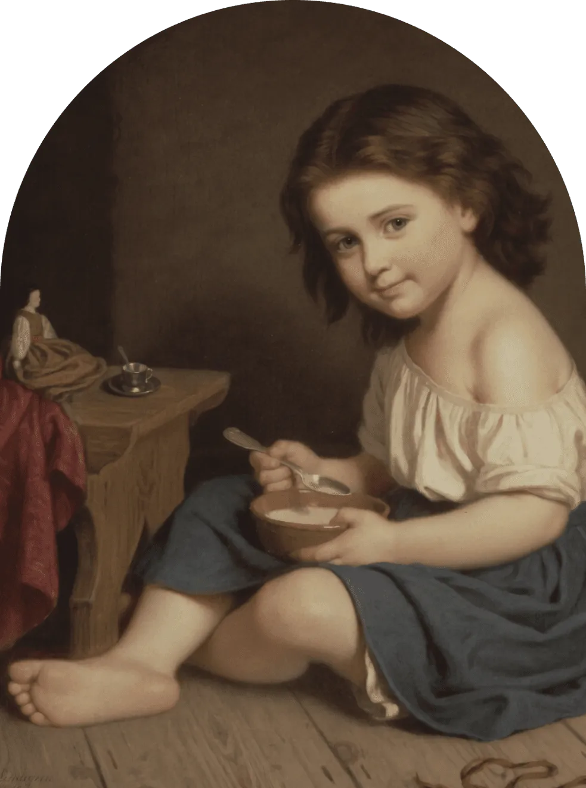
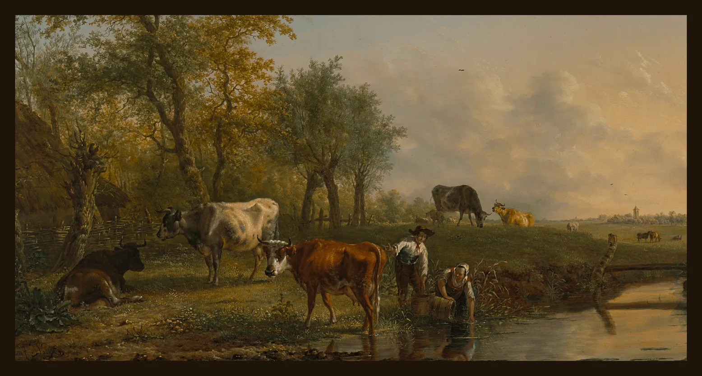

<section class="miracle container">  
    <div class="miracle__hero">
        <div class="miracle__block">
            <h2 class="miracle__title">Renaissance Miracle.</h2>
        </div>
        <div class="miracle__photo-subtitle">
            
            <div class="photo_info">
                <div class="miracle__subtitle-block">
                    <h3 class="miracle__subtitle">Embrace the <em>Art Treasures</em></h3>
                </div>    
                <p class="photo__year">—1882</p>
                <div class="miracle__artist-block">   
                    <p class="miracle__picture">"Proserpine"</p> 
                    <p class="miracle__artist">by Dante Gabriel Rossetti</p>
                </div>
            </div>
        </div>
    </div>
</section>


<!-- <div class="miracle__content">
    <div class="title__block">
        <h2 class="miracle__title">Renaissance Miracle.</h2>
    </div>
    <div class="miracle__photo-subtitle">
        
        <h3 class="miracle__subtitle">Embrace the <em class="miracle__subtitle-hilight">Art Treasures</em></h3>
    </div>
    <p class="miracle__year">-1882</p>
    <p class="miracle__artist">"Proserpine" by Dante Gabriel Rossetti</p>
</div>
<div class="miracle__description">
    <p class="miracle__description-paragraph">Step into a world of artistic wonders as RenArt Gallery presents a captivating series of Renaissance exhibitions.</p>
    <p class="miracle__description-subparagraph">Each exhibition is thoughtfully designed to highlight a specific theme, artist, or artistic movement from the Renaissance period. From the grandeur of the Italian High Renaissance to the delicate details of Northern Renaissance art, our exhibitions capture the breadth and depth of this influential period in art history.</p>
</div>
<div class="miracle__images">
    
    
    
</div>
</div> -->